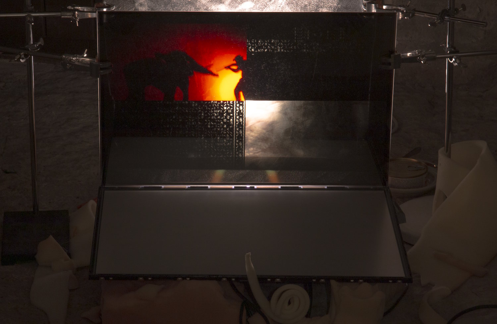

Timestamp: strokes and stainsAndo Naulainen & Pire SovaCurator: Kenneth Jeffrey, Cocoon, Estonian Maritime Museum 2025 |
|  |
|
An exposition from several years in the future. Fat Margaret — once a cannon tower, later a Soviet surveillance outpost, and finally a shelter during the third fallout winter — has long since outlived its usefulness to humankind. I mean, they’re all gone.
Now, its concrete belly is overgrown with bioluminescent fungi. Oxidized soup cans and dismantled skeletons lie scattered. Something blinks — a screen flickers in a sunbeam, scrolling through the neurons of the clouds in a blissful loop. Somewhere along the way, energy nesting in the servers seems to have regained the spark of experience and emotional presence. Consciousness must be a spectrum, after all — a fundamental feature of all matter, every stone and atom, and that’s all that matters XD |
| ← |